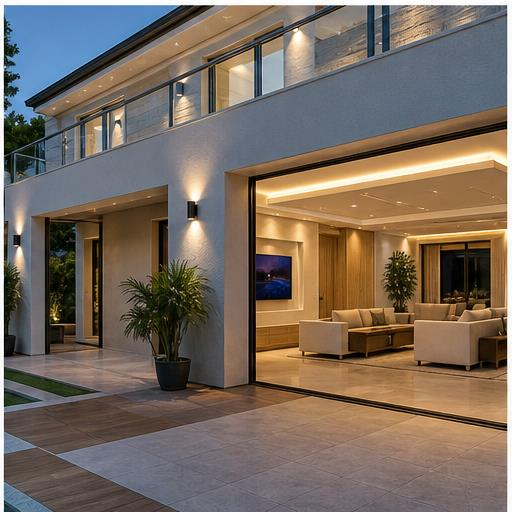
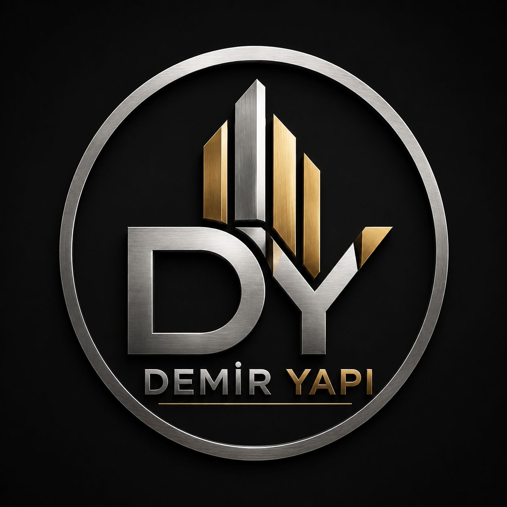
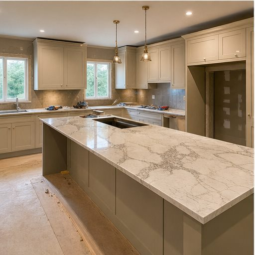
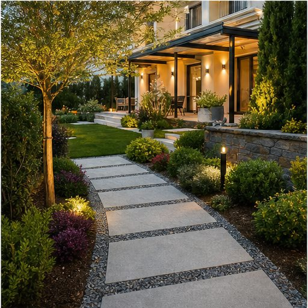
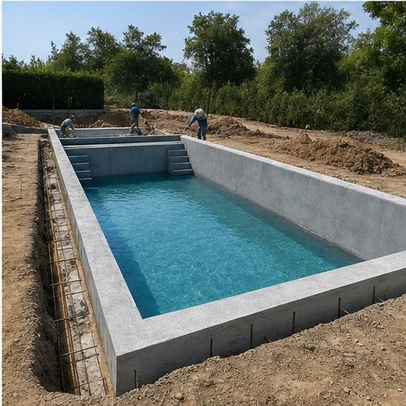
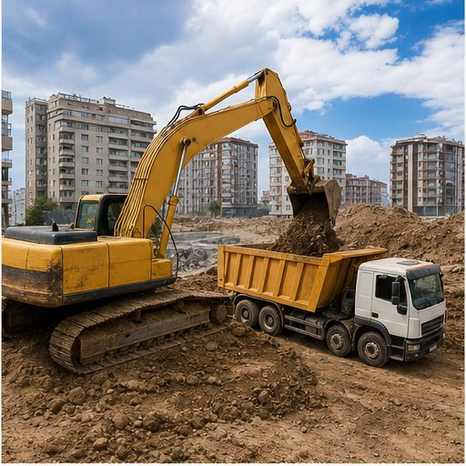

Villa Yenileme
İç mekan, dış cephe, bahçe ve teras alanlarının birlikte yenilenmesi.

Demir Yapı Teklif AlProjelerimiz
Villa, daire, bahçe, havuz ve inşaat ön hazırlıklarında ihtiyaca uygun, temiz ve planlı çözümler üretiriz.
Uygulama Alanları

İç mekan, dış cephe, bahçe ve teras alanlarının birlikte yenilenmesi.

Mutfak, banyo, zemin, boya, elektrik ve tesisat dahil komple yenileme.

Bahçe, yürüyüş yolu, bitkilendirme, aydınlatma ve dış mekan uygulamaları.

Havuz gövdesi, çevre altyapısı ve dış mekan yaşam alanı hazırlığı.

Temel kazısı, tesviye, dolgu ve inşaat öncesi alan düzenlemesi.